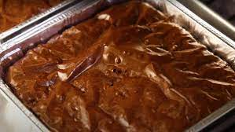

Fudgy Brownies

Where we're going, we don't need teeth
Last summer my dentist told me that in order to prevent more cavities from forming and repeat visits to the office, I would need to cut back on sugar. "Cut back on sugar!" In retrospect, having the equivalent of a blown out '67 Chevy Pickup with a carb that's never been cleaned for teeth probably warranted some extra caution on the part of the dentist.
So how about some dense and utterly gummy brownies to distract from thoughts like that!
Ingredients
- 1 stick butter
- 1/2 cup cocoa podwer
- 1 14oz can sweetened condensed milk
- 1 cup powdered sugar
- 2 teaspoons vanilla
- 2 teaspoons molasses
- 1 egg yolk
- 3/4 cup all-purpose flour
- 1 cup chocolate chip
Directions
- Preheat over to 325F and line a 9-inch square pan with parchment paper
- Melt the butter in a pot until it turns into brown butter
- When the butter smells like caramel, add in cocoa powder and keep on heat for one minute
- Whisk in sweetened condensed milk
- Then mix in powdered sugar until incorporeal
- Add in the salt, vanilla, egg yolk, and molasses
- Whisk in flour until just combined
- If you're adding chocolate chips, wait for the batter to cool or you'll have chocolate streaks
- Pour out into lined pan and chuck in the over for 30-40 minutes with the convection fan on
- Let cool on a rack then eat
- Visit the dentist. Again.
Follow me for more dental hacks.